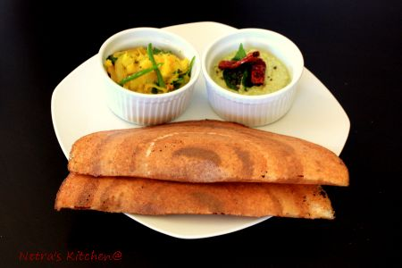

Dosa

Dosa
Preparation & Cooking: 15-20 mins
Ingredients:
2 cup rice
3/4 cup urad dal
1 tbsp maida
salt
Potato filling:
2 large boiled potato
1 medium onions sliced
2 green chillies
1/4 tsp mustard seed
1/2 tsp urad dal
1/2 tsp ginger grated
2-3 curry leaves
3 tbsp finely chopped coriander
1/2 tsp turmeric
salt to taste
1/2 tsp sugar(optional)
oil for frying
Coconut chutney:
1 cup grated coconut
2-3 green chilli
1 small piece ginger
3 tsp roasted split chickpeas
1/2 tsp cumin seeds
salt to taste
sugar to taste
3 tbsp coriander chopped
Method:
Soak Rice and Urad dal for 4 to 5 hours.
Grind it to paste adding water as required. Then add maida and salt grind again.
Cover and keep aside in a warm place for overnight.
Heat pan with little oil and pour a ladle of batter, spread in circular motion.
Let it cook for 3 to 4mins.
Put some ghee/butter on it and Serve it with coconut chutney and Alu sabji.
Potato Filling:
Cut the potatoes in small pieces.
Heat oil in an pan and add urad dal when dal become golden brown then add mustard.
Then add curry leaves, green chillies, onions and ginger and fry for 2 minute.
Add salt, turmeric and finally add potato.
Mix it well and garnish with coriander leaves.
Coconut chutney:
Grind all the ingredient in coconut chutney with little water.
Give tadka heat pan, put 1tsp oil, mustard and 2-3 curry leaves.
When mustard start crackling, add that tadka to chutney.
Our coconut chutney is ready to serve with dosa.
Rava Dosa
Preparation & Cooking: 15-20 mins
Ingredients:
1 cup fine rava
1/2 cup rice flour
1/4 cup maida
2 small onions finely chopped
3 tbsp finely chopped coriander
1 tsp green chilli paste or finely chopped green chillies
1 tsp cumin seeds
1/2 tsp turmeric
salt to taste
1/2 tsp sugar(optional)
oil for frying
2 cups water
Method:
Mix all the ingredients except oil to make batter. The batter should have a thin consistency and keep this aside for 5-10 mins.
Heat pan with little oil. Check the consistency of batter as the rava absorbs water, add more water such that it is of pouring consistency (like thick buttermilk)
Pour a ladle of batter, spread in circular motion. Let it cook for 2 mins and flip it. Cook it 2mins or until crisp.
Serve it with Mint chutney and Alu sabji.
Utappam
Preparation & Cooking: 15-20 mins
Ingredients:
2 cup of leftover idli/dosa batter
1/2 cup wheat flour
2 tbsp rice flour
1 small onion finely chopped
1 small tomato finely chopped
2-3 green chillies thinly sliced
2 tbsp coriander finely chopped
1/2 cumin seeds
2 tsp sugar
Salt to taste
2 tbsp oil
Method:
Heat oil in pan and add cumin, onion, chillies and fry of 2 minutes.
Then add tomato,salt and sugar saute for minute, keep aside and allow to cool.
Take leftover batter and add wheat flour,rice flour and little water mix well.
Then Add masala tadka to batter and mix well.
Heat pan with little oil and pour a ladle of batter, spread in circular motion.
Let it cook both side for 3 to 4mins.
Put some ghee/butter on it and Serve it with coconut chutney and Alu sabji.
Idli
Preparation & Cooking: 15-20 mins
Ingredients:
2 cup Idli Rava
1 cup Urad Daal
1/2 cup cooked rice
Salt to taste
Method:
Soak idli rava and urad dal separately for 4-5 hours.
Grind urad dal to paste adding water as required. Then add cooked rice and salt grind again.
Takeout water from rava and mix with grind paste. Beat batter for 2-3 minutes.
Cover and keep aside in a warm place for overnight.
Grease the idli plate and add spoonful of the batter to each of the idli plates.
Put idli stand in idli cooker and cook for 10-15 minutes.
Serve hot with sambar and coconut chutney.
Rava Idli
Preparation & Cooking: 15-20 mins
Ingredients:
1 cup Rava
2 cup yogurt
2 tbsp coriander finely chopped
1/4 tsp baking soda
Salt to taste
For Tadka
1 tsp Urad dal
1/2 tsp chana dal
1 tsp Mustard seeds
1/2 tsp ginger grated
8-10 Cashew pieces
1-2 Green chillies finely chopped
2-3 Curry leaves
Asafetida a pinch
1 tbsp Oil
Method:
Heat oil in pan and add Urad dal, chana dal, mustard seeds to splutter.
Then add curry leaves, asafetida, green chillies, garlic, cashew pieces and mix well.
Now add rava and fry until it turns light brown. keep aside and allow to cool.
Then add yogurt,salt to rava. Mix it well.
Now add baking soda coriander leaves to this and mix well. Keep aside for 15-20 minutes.
Afer the 20 minutes if batter is thick then add little water to thin it out.
Grease the idli plate and add spoonful of the batter to each of the idli plates.
Put idli stand in idli cooker for 10-15 minutes.
Serve hot with ghee and potato curry and coconut chutney.
Paddu/Paniyaram
Preparation & Cooking: 15-20 mins
Ingredients:
2 cup rice
3/4 cup urad dal
1 cup puffed rice
salt
Oil
Method:
Soak rice and urad dal for 4 to 5 hours.
Grind it to paste adding water as required. Then add washed soft puffed rice and salt grind again.
Cover and keep aside in a warm place for overnight.
Heat paddu pan with little oil and pour the batter in tava.
Let it cook for 2 to 3mins, when it is fried from one side, turn it cook on other side.
Serve it with coconut chutney.
Masala Upma
Preparation & Cooking: 35-40 mins
Ingredients:
1 cup Rava
1 small onion finely chopped
4-5 Beans thinly sliced
1/2 Carrot thinly sliced
1/2 cup Cabbage thinly sliced
2-3 green chilli sliced
2 tsp green peas
1 tsp garlic paste
3-4 curry leaves
2 tbsp coriander leaves
1/4 mustard seeds
1/2 inch cinnamon
2 cloves
1 cardamom
salt to taste
3 tbsp oil
Method:
Heat gee/oil in pan and then add rava, roast the rave until it gives nice aroma.
Grind the cinnamon, cloves and cardamom keep aside.
Heat oil in a pan and then add mustard, cumin, urad dal and fry till dals turns golden brown.
Now add curry leaves, green chilli, onion, beans, carrot and peas and saute till veggies become soft.
Then add cabbage, salt, sugar and pinch of grind masala powder, mix it well.Then add water to boil.
Now add carefully rava to boiling water and keep stirring for 2 minutes.
Close the lid and reduce the heat. Let it cook for 4-5 minutes.
Garnish with coriander leaves.
Masala Upma
Preparation & Cooking: 35-40 mins
Ingredients:
1 cup old fashioned oats
1 small onion finely chopped
4-5 Beans thinly sliced
1/2 Carrot thinly sliced
1/2 cup Cabbage thinly sliced
2-3 green chilli sliced
2 tsp green peas
1 tsp garlic paste
3-4 curry leaves
2 tbsp coriander leaves
1/4 mustard seeds
1/2 inch cinnamon
2 cloves
1 cardamom
salt to taste
3tbsp oil
Method:
Dry roast the old fashioned oats till get aroma from oats.
Grind the cinnamon, cloves and cardamom keep aside.
Heat oil in a pan and then add mustard, cumin, urad dal and fry till dals turns golden brown.
Now add curry leaves, green chilli, onion, beans, carrot and peas and saute till veggies become soft.
Then add cabbage, salt, sugar and pinch of grind masala powder, mix it well.Then add water to boil.
Now add carefully oats to boiling water and keep stirring for 2 minutes.
Close the lid and reduce the heat. Let it cook for 4-5 minutes.
Garnish with coriander leaves.
Diet Sandwich
Preparation & Cooking: 5-10 mins
Ingredients:
6 slices whole-wheat bread
1 extra ripe avocado
8 leaves iceburg lettuce
1 small onion sliced
1 tomato sliced
1 cucumber sliced
1 capsicum sliced
2 tbsp lemon juice
1/4 tsp pepper powder
salt to taste
Method:
Combine avocado, lemon juice, salt, pepper powder and mash until smooth spread, Keep aside.
Toast bread and then spread an equal amount of avocado spread on each slice.
Now on 3 bread slices put lettuce, onion, tomato, cucumber.
Cover each with another slice of toast. Cut sandwiches in half and serve immediately.
Semiya Upma
Preparation & Cooking: 35-40 mins
Ingredients:
1 cup Semiya
1 small onion finely chopped
4-5 Beans thinly sliced
1/2 Carrot thinly sliced
1/2 cup Cabbage thinly sliced
2-3 green chilli sliced
2 tsp green peas
1 tsp garlic paste
3-4 curry leaves
2 tbsp coriander leaves
1/4 mustard seeds
1/2 inch cinnamon
2 cloves
1 cardamom
salt to taste
3 tbsp oil
Method:
Roast the semiya until it turn into golden brown.
Grind the cinnamon, cloves and cardamom keep aside.
Heat oil in a pan and then add mustard, cumin, urad dal and fry till dals turns golden brown.
Now add curry leaves, green chilli, onion, beans, carrot and peas and saute till veggies become soft.
Then add cabbage, salt, sugar and pinch of grind masala powder, mix it well.Then add water to boil.
Now add carefully semiya to boiling water and keep stirring for 2 minutes.
Close the lid and reduce the heat. Let it cook for 4-5 minutes.
Garnish with coriander leaves.
Pav Bhaji
Preparation & Cooking: 35-40 mins
Ingredients:
2 big potato boiled
2 medium onion
2 small tomato
1 capsicum
10-15 beans
2 tsp ginger and garlic paste
1/2 cup peas
1/2 turmeric powder
1tsp chilli powder
1tbsp pav bhaji masala
2tsp chopped coriander
salt to taste
3 tbsp oil
Method:
Heat oil in pan, add finely chopped onion, beans, capsicum fry for 8-10 minutes.
Then add garlic, ginger paste saute till row smell disappear.
Add the finely chopped tomato and fry till the oil separates.
Add turmeric powder, chilli powder, salt and pav bhaji masala and mix well.
Add boiled and mashed carrot and potato, mix well.
Now add 1 cup water, boil for 5-10 minutes.
Finely garnish with chopped coriander.
slice the pav and put little butter on both side
Heat tava and cook pav on both sides.
Hakka Noodle
Preparation & Cooking: 15-20 mins
Ingredients:
1 pack hakka noodles
1 bunch spring onion chopped
2 small carrot thinly sliced
1 cup capsicum thinly sliced
1 cup cabbage thinly sliced
5-6 baby corns
2 tsp garlic fine chopped
2 tsp tomato ketchup
1 tsp red chilli sauce
1 tsp Pepper powder
1 tsp soya sauce
1/2 tsp vinegar
pinch of ajjinomotto(optional)
Salt to taste
3 tbsp Oil for fry
Method:
Cook noodles as per the instruction given in the pack and keep aside.
Heat oil in a pan and add spring onion white part, ginger and garlic, stir fry till it starts browning.
Now add carrot, capsicum and cabbage, baby corn in order one by one, and frying each for minute.
Then add soya sauce, vinegar, pepper powder, red chilli sauce, tomato ketchup and salt, mix well.
Add the cooked noodles and mix well.Then add spring onion green part, stir it in high flame.
Serve hot.
Vada Pav
Preparation & Cooking: 35-40 mins
ingredients for vada:
6-7 pav
4 large Potato, boiled and mashed
1 tsp green chilli paste
1 tsp garlic paste
1/2 garlic paste
1 tsp finely chopped coriander
salt to taste
1/4 Asafoetida
1 tbsp oil
1 tsp turmeric powder
1/2 cup Besan(chickpea flour)
1/2 tsp chilli powder
1/2 tsp Baking soda
Oil for frying
For dry coconut Chutney:
1/2 cup Grated Dried Coconut
2-3 Garlic cloves peeled
1/2 cumin seeds
2 tbsp Red chilli powder
2 curry leaves
salt
1/4 sugar(optional)
For Green Chutney
2 cup chopped coriander
1/2 cup chopped mint
1/2 cumin seeds
1 tsp peanut, roasted
1-2 green chilli
Pinch of salt
2 tbsp lemon juice
2 tbsp water
Method:
To make coconut chutney grind all ingredients, make fine powder.
To make green chutney grind all ingredients to a fine paste.
Slice pav and sprinkle 1tsp coconut chutney on bottom half of bun.
Spread green chutney onto top half of bun, keep it aside.
Heat oil in pan, add asafoetida,green chilli paste, ginger and garlic paste saute for a minute.
Add salt, turmeric powder and then add mashed potato, chopped coriander and mix well
Make small balls out of potato mix.keep aside.
In a bowl, combine chickpea, 1/4tsp turmeric powder, chilli powder, pinch of salt, baking soda and 1 cup water. Mix well.
Make a little thin batter, and dip potato balls in batter to coat well.
Deep fry in hot oil till golden brown.
Place one vada in pav and serve hot.
Spring Roll
Preparation & Cooking: 15-20 mins
Ingredients:
10-12 Spring roll wrappers
2-3 spring onion
4-5 Beans thin sliced
1 small carrot thin sliced
1/2 capsicum thin sliced
1/2 cup cabbage shredded
1 tsp Pepper powder
3-4 tsp soya sauce
2-3 tsp vinegar
Salt to taste
3 tbsp Oil for fry
Method:
Heat oil in a pan and add spring onion white part, ginger and garlic, stir fry till it starts browning.
Now add carrot, beans, capsicum and cabbage in order one by one, and frying each for minute.
Then add soya sauce, vinegar, pepper powder and salt, mix well.
Add spring onion green part, stir it in high flame.
Spring roll stuffing is ready.
Defrost spring roll sheet to room temperature and then separate the sheet carefully.
Take one sheet and keep 2tbsp of stuffing a little above one corner.
Fold in the end of the corner and then both sides roll in such a way to cover the stuffing until half way.
Make a paste of maida with little water and use that to line the corners of the sheets.
Again roll tightly to make it completely sealed.
Repeat the process to finish the stuffing.
Now deep fry the spring roll.
Masala Corn Chaat
Preparation & Cooking: 15-20 mins
Ingredients:
1 cup boiled Corn
1/2 tsp chaat masala
1/2 tsp red chili powder
1/2 tsp lemon juice
1/2 tsp chopped coriander
Salt to taste
2 tsp Oil
Method:
Heat oil in a pan, add corn and for a minute.
Now add chaat masala, red chili powder, salt, lemon juice and fry for 2 minutes.
Garnish with coriander.
Masala Vada
Preparation & Cooking: 15-20 mins
Ingredients:
1/2 cup channa dal
1/2 cup moong dal
1 tbsp rice flour/rava
2 garlic clove
1/2 inch ginger
2 green chili
1 tsp cumin seeds
2 tbsp mint chopped
2 tsp chopped coriander
Salt to taste
Oil for frying
Method:
Soak channa dal and moong dal for 2 or 3 hrs.Then drain the water completely and keep aside
Grind garlic, ginger, cumin seeds, green chili, mint, corinder and salt to paste.
Now grind chana dal and moong dal to coarsely(not too smooth not very coarse too)
Tranfer this mixture to a bowl and add chopped onion, sooji,grind masala paste and mix well.
Then wet both hands and make equal sized ball out of the mixture, and pat them on your pam to make a circle to medim thickness.
Deep fry in hot oil until golden in color, flipping once in between. Always cook in medium flame and drain in paper towel
Bhel Puri
Preparation & Cooking: 15-20 mins
Ingredients:
1 cup puffed rice
1 small Potato, boiled and mashed
1 small onion finely chopped
1 small tomato finely chopped
2 green chilies chopped
1 tbsp roasted peanuts
1/2 cup sev
1/2 cup nimkis
1/2 cup gol gappas
1/2 tsp chaat masala
5 tbsp mint and corinder chutney
2 tbsp tamarind chutney
1/2 tsp lemon juice
1/2 tsp chopped coriander
Method:
Mix the puffed rice, onion, chili, tomato, potato and mix it well.
Lightly crush the nimkis and golgappas. Then mix all other ingredients.
Finally Garnish with coriander and serve immediately.
Please enable JavaScript to view the comments powered by Disqus.
comments powered by